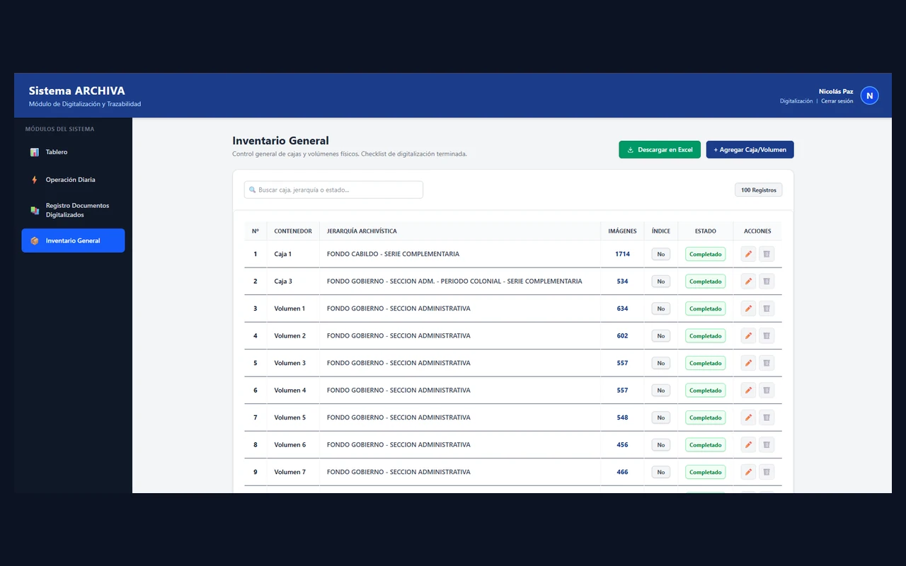

Archiva
Una aplicación Full Stack para organizar y seguir el trabajo de digitalización documental.
Proyecto personal surgido de necesidades identificadas durante mi trabajo en La Gráfica, en un proyecto de digitalización histórica vinculado al Archivo Histórico de Tucumán.
- Next.js
- TypeScript
- Node.js
- Express
- PostgreSQL
- Prisma

El problema
La digitalización documental requiere organizar contenedores, registrar lo procesado y mantener el seguimiento de fechas, metadatos e intervenciones. Archiva reúne estas tareas en una aplicación.
Mi trabajo en el proyecto
Desarrollé la solución Full Stack: la interfaz, la API y la estructura de datos. El punto de partida fueron necesidades que identifiqué al participar en el proceso de digitalización.
Mi empleador es La Gráfica. El Archivo Histórico de Tucumán es la institución vinculada al proyecto documental. Archiva es un desarrollo personal; no se presenta como una adopción oficial de la institución ni del Gobierno.
Qué permite hacer
- Gestionar el inventario: registrar contenedores físicos y consultar sus estados.
- Catalogar documentación: completar y actualizar metadatos de los registros.
- Registrar la operación diaria: ingresar el trabajo de digitalización realizado.
- Consultar el historial: revisar intervenciones asociadas a operadores y filtrar registros por fecha, operador o estado.
- Seguir el avance: visualizar indicadores y gráficos en un tablero de seguimiento.
Arquitectura general
Una interfaz web conectada a una API independiente, con persistencia relacional.
- InterfazNext.js · TypeScript
- APINode.js · Express
- DatosPostgreSQL · Prisma
Alcance de este caso
Esta presentación describe funcionalidades del código y muestra una captura de la aplicación. Los repositorios son privados; no se comparten datos de trabajo ni documentación interna.